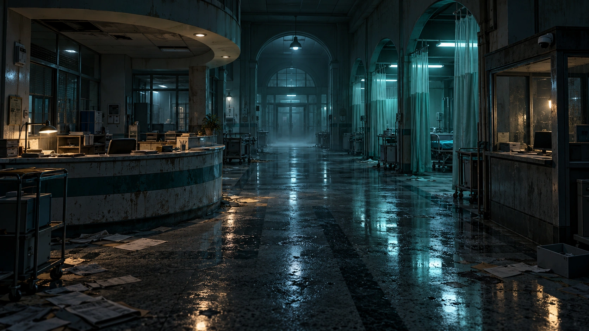

01 · Twitch signal
Simulation is clearly labeled. Connect genuine Twitch from this browser.
OAuth tokens remain in this browser. The included server provides static preview and a loopback-only OBS state relay; it is not an OAuth proxy.You search, deduce, and survive. Twitch chat votes to alter doors, power, resources, and the Warden—but it cannot make your moves for you.
Abandoned hospital reception. The corridor is quiet and the entity is undetected.

Inspect the scene. Choose deliberately.
OPEN · One verified viewer ID gets one vote this round.
JOIN + VOTE !join guardian · !join chaos · use one highlighted !command · !power surge
The streamer and audience shaped this ending together.
The choices that produced this ending will appear here.
One console for pacing, Twitch signal, safety, and rehearsal.
Simulation is clearly labeled. Connect genuine Twitch from this browser.
OAuth tokens remain in this browser. The included server provides static preview and a loopback-only OBS state relay; it is not an OAuth proxy.Generate normalized EventSub-style events. Vote with the displayed commands; factions use !join guardian, !join chaos, and !power surge.
Audio locked · use Enter, Start, or Test sound; captions remain available
Audio begins only after a trusted click. Capture the authoritative game tab once in OBS; passive mirror routes stay silent to prevent duplication while receiving every sound caption.
Readiness: awaiting briefing.
Rehearsal telemetry only · no measured playtest duration.